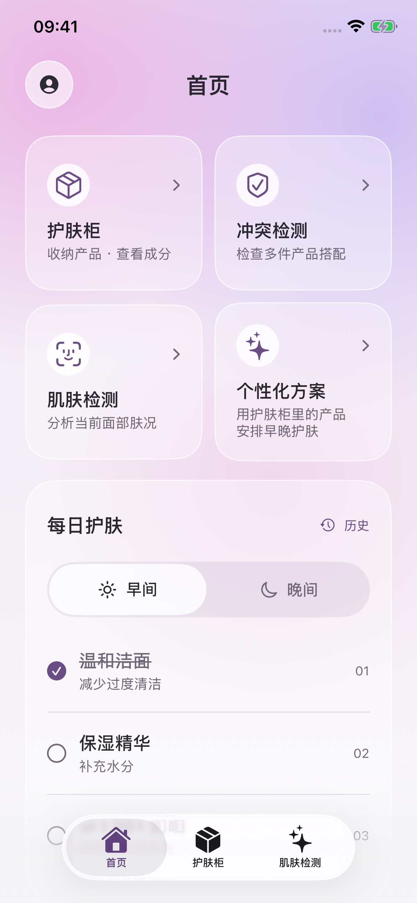
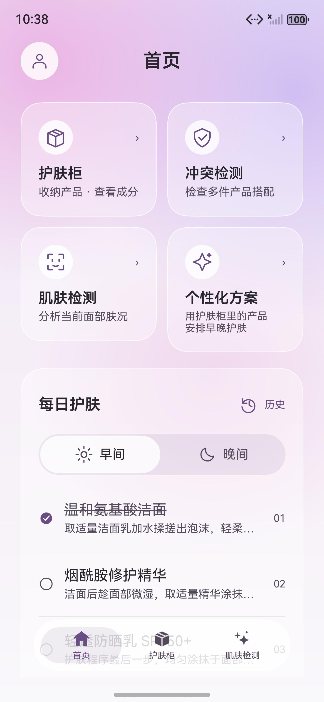
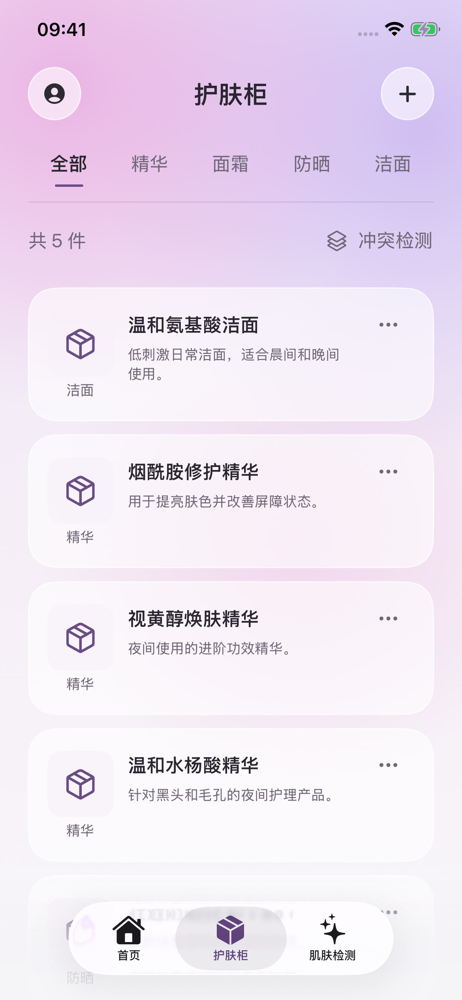
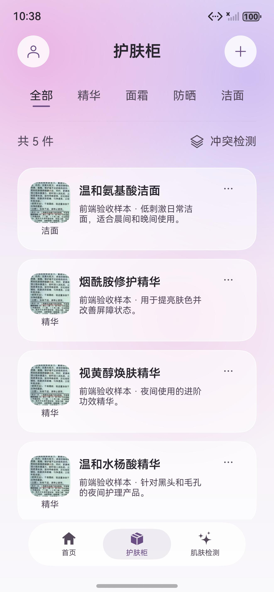
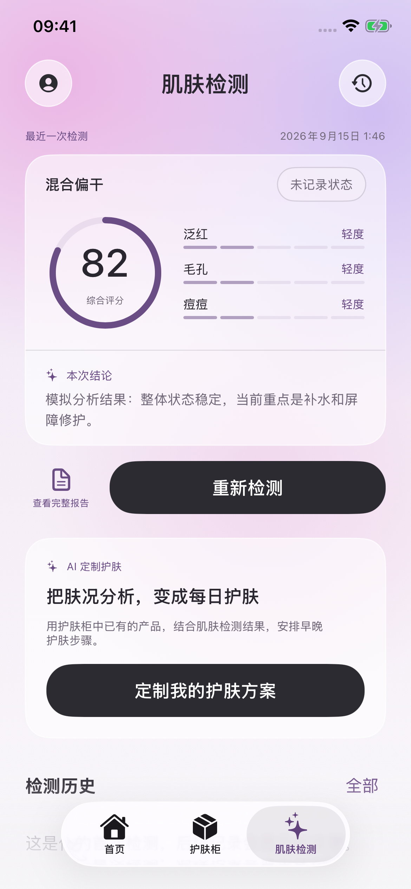
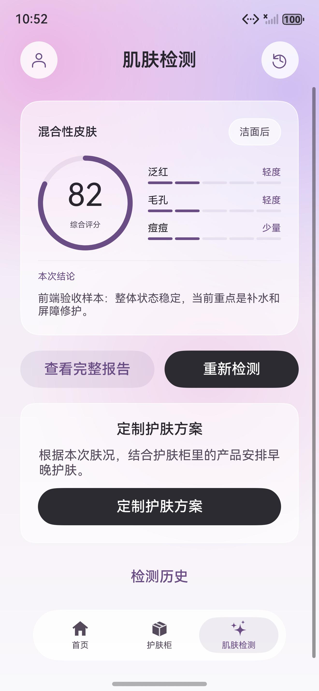
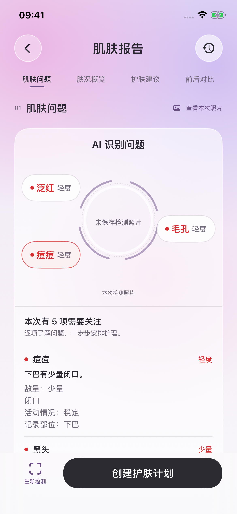
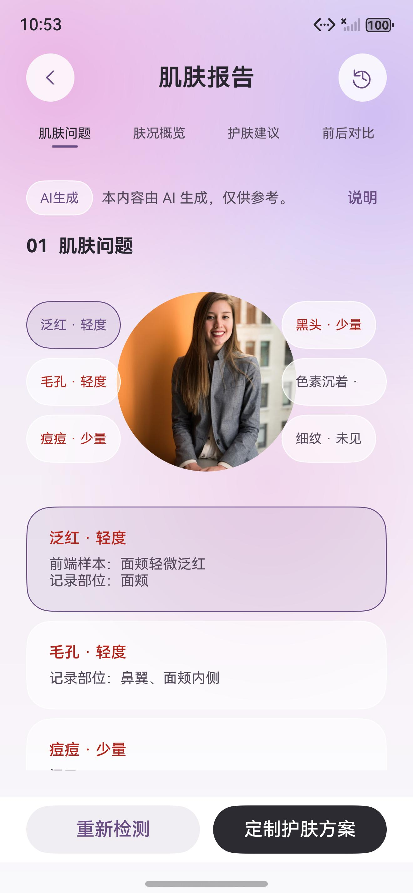
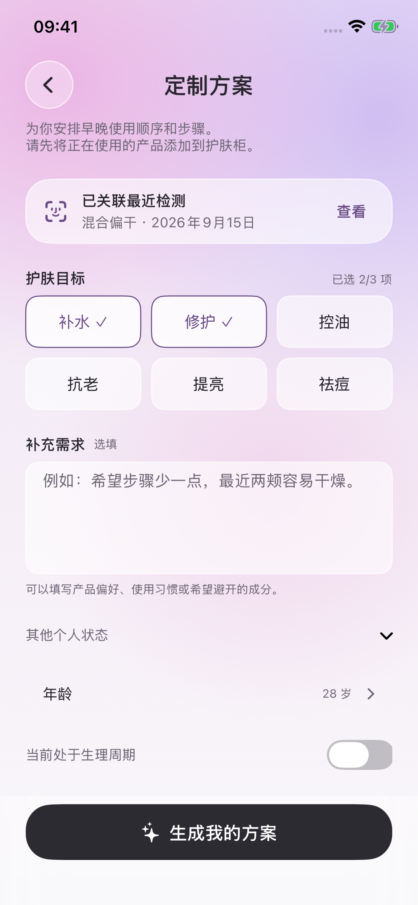
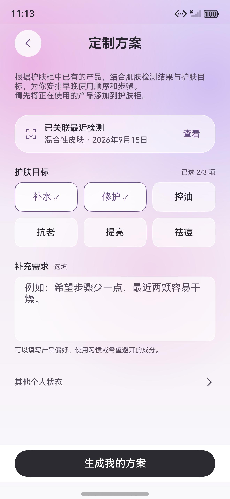

析肤AI · 原生前端对照
iOS 9f69aa9 与本轮 HarmonyOS 原生运行截图。图片按列宽等比显示，未裁切或修饰。此页用于人工检查，不是逐像素一致证明。
首页
数据分别为 iOS Mock 与本地实际采用方案。标题、入口、每日步骤使用对应共享组件。
iOS · 固定提交 / Mock
HarmonyOS · 本地 API
护肤柜
比较五项筛选、数量、冲突入口和产品行；两边使用不同测试产品图片与说明。
iOS · 固定提交 / Mock
HarmonyOS · 本地 API
肌肤概览
摘要结构与指标使用同职责组件，具体测试数据不同。
iOS · 固定提交 / Mock
HarmonyOS · 本地 API
肌肤报告
照片标注、目录和滚动内容；不会伪造 iOS 示例照片或判断。
iOS · 固定提交 / Mock
HarmonyOS · 本地 API
方案表单
两项目标、来源报告和备注，平台字形与屏幕宽高存在差异。
iOS · 固定提交 / Mock
HarmonyOS · 本地 API
已记录差异：四项对比度颜色、系统字体、原生控件、底栏材质和登录方式。真机、多字号和完整逐像素验收尚未完成。